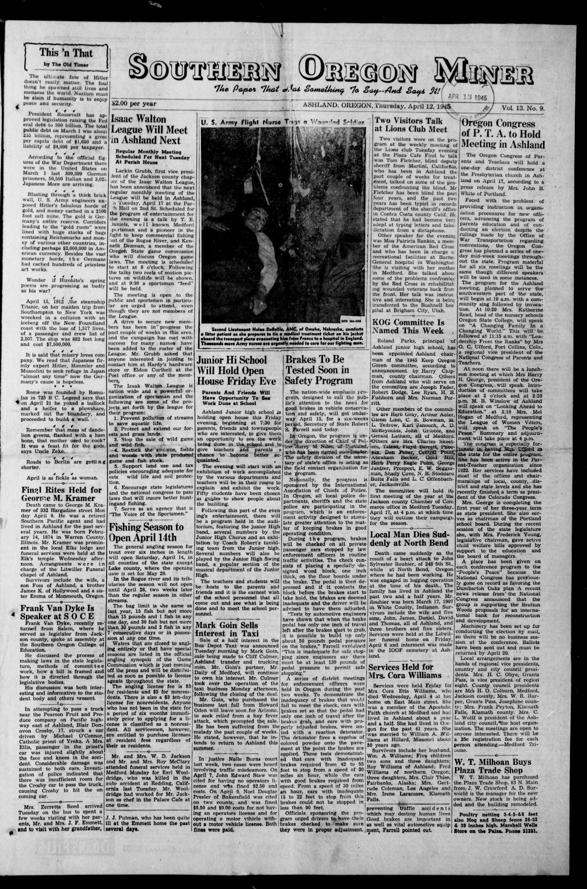
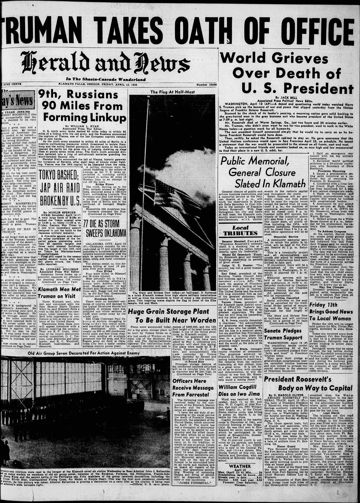
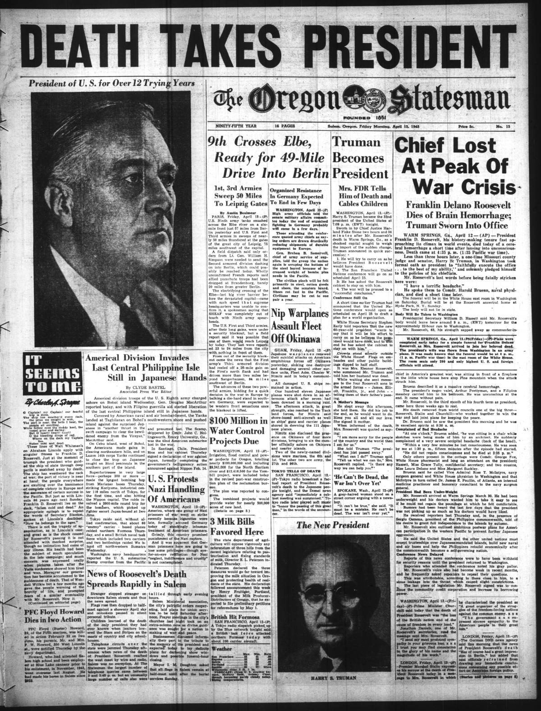

HN HN-548 · April 12, 1945 · Politics, Government & Diplomacy > Presidents, Monarchs & Leadership Changes > Succession
Source: Decatur Daily Democrat, p. 7 — original page; Truman Presidential Library, succession.
Report: The afternoon newspaper announced Franklin D. Roosevelt's death in Warm Springs, Georgia, and Harry S. Truman's immediate swearing-in. OCR of the headline describes Truman as the “32nd†president.
Assessment: Roosevelt was the 32nd president and Truman became the 33rd, so the OCR/headline reading of “32nd†for Truman is wrong; the original image should be checked before assigning that typo to the printer rather than digitization. The succession occurred while fighting continued in Europe and the Pacific.
Authentic scans retrieved from Historic Oregon Newspapers (University of Oregon). Article crops are located using the archive's own OCR word coordinates and rendered at native crop resolution; page scans are reduced-size access renditions. No images were generated, mocked, or retouched.



Not yet acquired. Queued for provider-specific acquisition testing (see source-acquisition manifest).
URL (preserved verbatim): https://newspapers.library.in.gov/?a=d&d=DCDD19450412.1.7
Saved research report: Historical_Newspaper_Event_Research_528-552_2026-10-23.md
Evidence note: A newspaper report means a historical publication made a claim; it does not establish that claim as fact. Contemporary reporting is separated from later scholarly context and our own assessment.